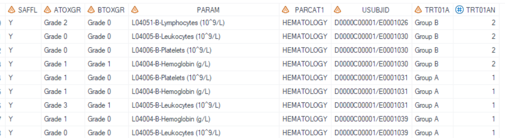
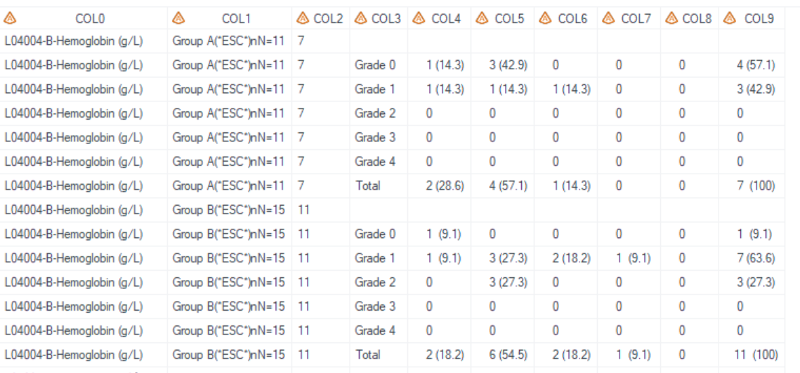
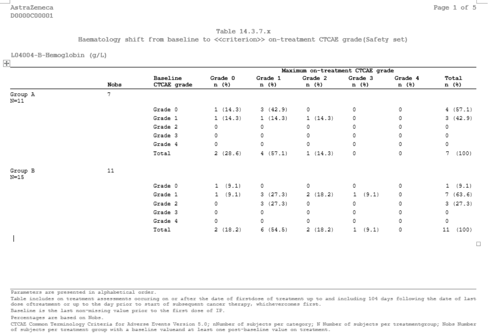

Example
Example Shift table for hematology
Example Shift table for hematology
Details
This example does the following:
Output the cross table: "Shift from baseline to maximum on-treatment CTCAE grade", following the template AZTONCLB01.
Program
*Generated _param_fmt format, display param in subtitle by page;
proc sql;
create table _format
( fmtname char(200), start char(200), label char(200), type char(1) );
insert into _format
select distinct '_param_fmt', PARAM, "Parameter: " || strip(PARAM), 'C' from adam.adlb group by PARAM;
quit;
proc format cntlin=_format ;
run;
* Call %m_t_lb_shift;
%m_t_lb_shift(
inds=adam.adlb
,pop_flag=SAFFL eq "Y"
,whr=parcat1="HEMATOLOGY"
,pop_mvar=saspopb
,paramvar=PARAM
,paramvarN=
,paramvarfmt=$_param_fmt
,trtgrpn= TRT01AN
,trtTot=Y
,UniqueIDVars=USUBJID
,rowvarc= BTOXGR
,rowfmt=
,rowtot= Y
,colvarc= ATOXGR
,colfmt=
,coltot=Y
,lenlist=
,headerlist= #Nobs#Baseline(*ESC*)nCTCAE grade
,above_header=Maximum on-treatment CTCAE grade
,pg= 14
,sfx= haem_saf
,deBug=Y
);
Program Description
Input data feature
All required variables should be in input dataset dsin, inclduing USUBJID, TRT01AN, PARAM, baseline CTCAE grade variable (BTOXGR), and on-treatment CTCAE grade variable (ATOXGR).

Parameter description
Need total
There's no total group in input datasetinds, so settrtTot='Y'and utilizepop_mvar=saspopbto display the total group. Global macrosaspopbwhich includes total group is created in %m_u_popn which should be executed prior to invoking this macro.
Set
rowvarc=BTOXGRandcolvarc=ATOXGRto define "Baseline CTCAE grade" as the row variable and "Maximum on-treatment CTCAE grade" as the column variable.Set
paramvar=PARAMwhich will be reflected in the subtitle. If you prefer to display the values in PARAM directly, setparamvarfmtto null. Otherwise, assign a format toparamvarfmt. In this example, setparamvarfmt=$_param_fmt.By setting
sfx = haem_safwith the program name being "t_lb_shift" in this example, the resulting output files will be named as "t_lb_shift_haem_saf.sas7bdat" and "t_lb_shift_haem_saf.rtf".
Output
Output Dataset
Generate output datasets "work.final2qc.sas7bdat" and "tlf.t_lb_shift_haem_saf.sas7bdat" (These two datasets are exactly the same dataset and used for QC), and "work.final2output.sas7bdat" (used in proc report process).
Dataset output for QC includes variables from COL1 to COL9, as well as COL0 which stores the value for PARAM. Specifically, COL3 represents the "Baseline CTCAE grade", while COL4 through COL9 correspond to the "Maximum on-treatment CTCAE grade", ranging from Grade 0 to Grade 4, along with a total grade column.

Output rtf
The "t_lb_shift_haem_saf.rtf" file has been generated, and as a result of the formatting applied to PARAM, the subtitle now includes the prefix text "Parameter: " which is not included in output dataset.
